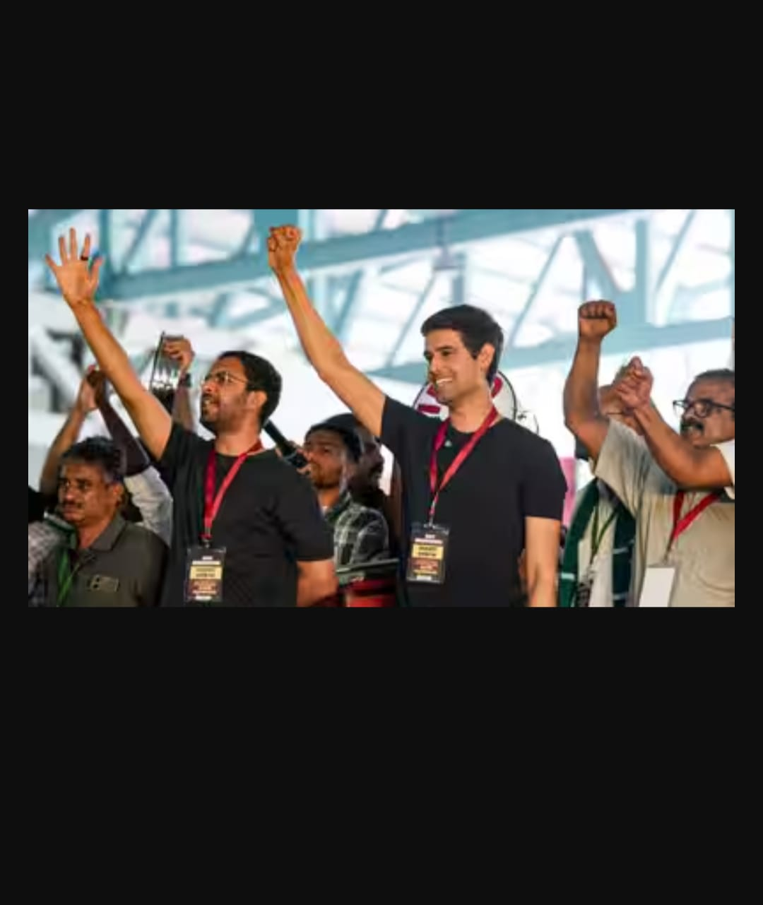

Cockroach Janta Party Protest 2.0
"Jantar Mantar 2.0" — A youth-led movement demanding accountability

Supporters of the Cockroach Janta Party gathering at Jantar Mantar, New Delhi.
New Delhi: The national capital has been turned into a virtual fortress as the satirical youth-led movement Cockroach Janta Party (CJP) goes ahead with its second major protest — "Jantar Mantar 2.0" — demanding the resignation of Chief Election Commissioner Gyanesh Kumar over alleged irregularities in the Special Intensive Revision (SIR) of electoral rolls.
🔒 Delhi Under Siege
Ahead of the protest, authorities deployed over 20,000 police and paramilitary personnel across the city. Entry and exit gates at 57 Metro stations — including Rajiv Chowk, New Delhi, Central Secretariat, Patel Chowk, and Kashmere Gate — were closed from Friday night. Over 250 trains bound for New Delhi and Hazrat Nizamuddin stations were cancelled between 4 AM and 2 PM. Internet services were suspended within a 4 KM radius of the Janpath-Kartavya Path crossing for 24 hours.
The Delhi Police denied permission for the protest, citing Section 163 of the BNSS (Bharatiya Nagarik Suraksha Sanhita). Joint Commissioner Nupur Prasad stated that the intimation was given late and that the CJP had previously violated undertakings. CJP leaders, however, called these restrictions the "making of an Emergency."

Delhi Metro stations shut down ahead of the CJP protest.
🚔 Mass Detentions Reported
The CJP alleged that thousands of volunteers were detained across states — West Bengal, Maharashtra, Uttar Pradesh, and Madhya Pradesh — to prevent them from reaching Delhi. CJP founder Abhijeet Dipke accused the government of "intimidation" and said volunteers heading to the capital were intercepted and detained on trains and at hotels.
In West Bengal, a 10-member CJP team was reportedly picked up from a hotel, assaulted, and detained for over 12 hours. Similar reports emerged from Pune, where students were stopped while boarding trains to Delhi.
🔥 The July Crackdown — A Painful Memory
This is not the first time CJP has faced state pushback. In July 2026, during the movement's first major protest over the NEET-UG 2026 paper leak, Delhi Police clashed with protesters at Jantar Mantar. Police used batons, tear gas, and water cannons on what CJP described as a peaceful gathering. Over 100 people were hospitalised, including 60 protesters and several police personnel.
Videos surfaced online showing police personnel allegedly slapping female protesters. A senior Delhi Police officer was later removed from the protest site following public outrage.

July 2026: Police clash with CJP protesters at Jantar Mantar.
🏛️ How July Ended — Minister Resigned
After 36 days of occupation at Jantar Mantar and nationwide protests, the government bowed to pressure. On July 25, 2026, Union Education Minister Dharmendra Pradhan tendered his resignation, taking "moral responsibility" for the NEET paper leak. The CJP declared victory and called off the agitation, stating that all demands had been accepted.
🎯 Why October 10 Matters
The October 10 protest (dubbed "Jantar Mantar 2.0") is being seen as a test of whether the youth movement can sustain its momentum. Unlike July's focus on education, this time the demand is electoral — the resignation of CEC Gyanesh Kumar and a rollback of the SIR exercise, which the CJP claims is being used to disenfranchise voters.
Despite the ban, CJP leaders have said they will march to Jantar Mantar "come what may." As of this report, the situation remains tense, with heavy security deployment across the capital.
"Detaining, arresting and beating people for a protest that hasn't even begun yet? The chaos this government has unleashed will shake the very thrones it sits on, sooner than they think."
🎥 Notable Voices on the Ground
Prominent public figures were seen standing in solidarity with the movement. YouTuber and political commentator Dhruv Rathee was spotted at the protest site, amplifying the CJP's message. His presence added significant reach to the movement's digital footprint — with millions of his subscribers reportedly tuning into live updates from Delhi.

Dhruv Rathee at the CJP Protest 2.0, New Delhi.
📊 Key Numbers

CJP supporters gather despite restrictions.
This is a personal field report compiled from publicly available news sources, social media updates, and eyewitness accounts. The views expressed do not represent any political party, organisation, or government body. This content is shared for informational and archival purposes only. Reader discretion is advised.
Report compiled by Nexus Field Team. All images are for representative purposes.